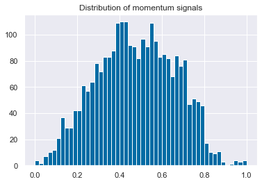
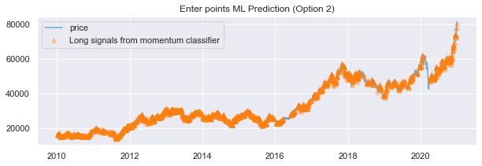
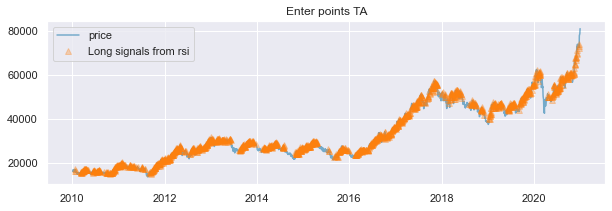
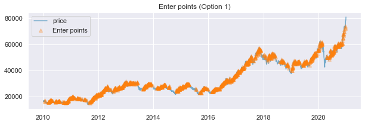
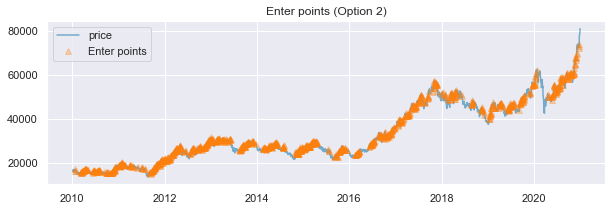
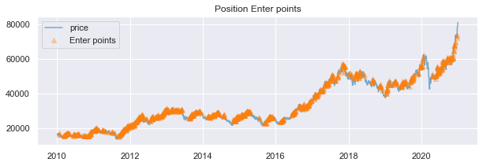
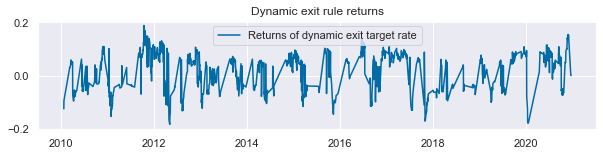
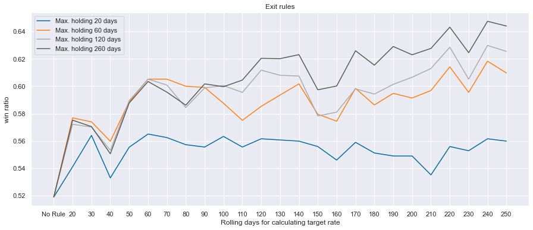

# lib
import numpy as np
import pandas as pd
import matplotlib.pyplot as plt
import seaborn as sns;sns.set()
plt.style.use('tableau-colorblind10')
from sklearn.preprocessing import StandardScaler, MinMaxScaler, normalize
# homemade
from features import trnd_scan, tautil
from labeling import labeling
from triple_barrier import get_barrier, make_rt
from backtest import print_round_trip_stats, round_trip머신러닝을 이용한 트레이딩: (6) 매매 규칙
Trading Rules
trading
Trading rules: 매수 진입만 허용
- Inputs
- 진입(Enter) 규칙 : 모멘텀 시그널과 기술적 분석
- 청산(Exit) 규칙: 다이나믹 트리플(익절, 손절, 최대보유) 청산
- outputs
- 각 매매의 성공/실패 여부
import warnings
warnings.filterwarnings(action='ignore')market_df = pd.read_csv('C:data/market_samsung.csv')
market_df = market_df.rename(columns={market_df.columns[0]:'Date'})
market_df.index = pd.to_datetime(market_df.Date)
market_df.drop(columns='Date',inplace=True)
market_df.dropna(inplace=True)
close = market_df.close['2010':'2020']매매 규칙
진입 규칙
Momentum Prediction
signals = pd.read_csv('C:data/momentum_signals.csv')
signals.index = pd.to_datetime(signals['Date'])
signals.drop(columns='Date',inplace=True)signals = signals['signals'].loc['2010':'2020']scaler = normalize
scaler2 = MinMaxScaler()
signals = pd.Series(scaler2.fit_transform(normalize(signals.values.reshape(-1,1),axis=0)).reshape((-1,)),
index=signals.index).rename('signals')plt.hist(signals,bins=50)[2]
plt.title('Distribution of momentum signals')
plt.show()
thresholds = [0, 0.3]enter_ml_list=[]
for h in thresholds:
enter_ml_list.append(signals.loc[signals>h].index)for i in range(len(thresholds)):
plt.figure(figsize=(10,3))
plt.plot(close, alpha=0.5)
plt.title('Enter points ML Prediction (Option {})'.format(i+1))
plt.plot(close.loc[enter_ml_list[i]],marker='^',linewidth=0,alpha=0.3)
plt.legend(['price','Long signals from momentum classifier'])
plt.show()
Tech. Analysis Long/short decision
open = market_df.open['2010':'2020']
rsi = tautil.RSIIndicator(open,14).rsi().dropna()
long = (rsi>=50) & (rsi<70)
enter_ta = rsi.loc[long].indexplt.figure(figsize=(10,3))
plt.plot(close, alpha=0.5)
plt.title('Enter points TA')
plt.plot(close.loc[enter_ta],marker='^',linewidth=0,alpha=0.3)
plt.legend(['price','Long signals from rsi'])
plt.show()
enter_list = [enter_ta]
enter_list.append((enter_ml_list[1]& enter_ta).sort_values().drop_duplicates())for i in range(len(thresholds)):
plt.figure(figsize=(10,3))
plt.plot(close, alpha=0.5)
plt.title('Enter points (Option {})'.format(i+1))
plt.plot(close.loc[enter_list[i]],marker='^',linewidth=0,alpha=0.3)
plt.legend(['price','Enter points'])
plt.show()

plt.figure(figsize=(10,3))
plt.plot(close, alpha=0.5)
plt.title('Position Enter points'.format(i+1))
plt.plot(close.loc[enter_list[1]],marker='^',linewidth=0,alpha=0.3)
plt.legend(['price','Enter points'])
plt.show()
청산 규칙
# no Rule (benchmark)
pt_sl_bm = [1000,1000]
max_holding_bm = [1, 0]
no_exit_rule = [pt_sl_bm,max_holding_bm]#dynamic target rule
max_holding = [60, 0]
close_ = market_df.close['2009':'2020']
changes = close_.pct_change(1).to_frame()
for i in range(2,max_holding[0]+1):
changes = changes.join(close_.pct_change(i).rename('close {}'.format(i)))
dynamic_target = changes.abs().dropna().mean(axis=1)['2010':]barrier_exit_list=[]
barrier_exit_list.append(get_barrier(close, enter_list[1], [1,1], max_holding, target = dynamic_target)) #dynamic
rts_exit_list=[]
for i in range(len(barrier_exit_list)):
rts_exit_list.append(make_rt(close,barrier_exit_list[i].dropna()))plt.figure(figsize=(10,2))
plt.title('Dynamic exit rule returns')
plt.plot(barrier_exit_list[0].ret)
plt.legend(['Returns of dynamic exit target rate'])
결과
벤치마크
- 매번 매매시
barrier_bm = get_barrier(close, close.index, no_exit_rule[0], no_exit_rule[1]) #no rulerts_bm = make_rt(close,barrier_bm.dropna())round_trip.get_df_ann_sr(rts_bm,'Benchmark',years=11)| Benchmark | |
|---|---|
| avg_n_bets_per_year | 243.272727 |
| win_ratio | 0.518835 |
| annualized_sharpe_ratio | 0.537080 |
result_df = pd.concat([round_trip.get_df_ann_sr(rts_bm,'No Rule')], axis=1)
for i in range(len(rts_exit_list)):
result_df = result_df.join(round_trip.get_df_ann_sr(rts_exit_list[i],'Enter & Exit Rule'))
result_df| No Rule | Enter & Exit Rule | |
|---|---|---|
| avg_n_bets_per_year | 243.272727 | 105.000000 |
| win_ratio | 0.518835 | 0.590988 |
| annualized_sharpe_ratio | 0.537080 | 1.800316 |
최적 청산 규칙 파라미터
#dynamic target rule
# different maximum holding
close_ = market_df.close['2009':'2020']
rolling = np.arange(20,260,10)
mhs = [20,60,120,260]
win_ratios = pd.DataFrame()
for mh in mhs:
max_holding = [mh, 0]
dynamic_targets = []
for j in rolling:
for i in range(2,j+1):
changes = close_.pct_change(1).to_frame()
changes = changes.join(close_.pct_change(i).rename('close {}'.format(i)))
dynamic_target = changes.abs().dropna().mean(axis=1)['2010':]
dynamic_targets.append(dynamic_target)
barrier_exit_list_rolling=[]
for i in range(len(dynamic_targets)):
barrier_exit_list_rolling.append(get_barrier(close, enter_list[1], [1,1], max_holding, target = dynamic_targets[i])) #dynamic
rts_exit_list=[]
for i in range(len(barrier_exit_list_rolling)):
rts_exit_list.append(make_rt(close,barrier_exit_list_rolling[i].dropna()))
result_df = pd.concat([round_trip.get_df_ann_sr(rts_bm,'No Rule')], axis=1)
for i in range(len(rts_exit_list)):
result_df = result_df.join(round_trip.get_df_ann_sr(rts_exit_list[i],'{}'.format(rolling[i])))
win_ratios['Max. holding {} days'.format(mh)] = result_df.T.win_ratio
win_ratios| Max. holding 20 days | Max. holding 60 days | Max. holding 120 days | Max. holding 260 days | |
|---|---|---|---|---|
| No Rule | 0.518835 | 0.518835 | 0.518835 | 0.518835 |
| 20 | 0.541054 | 0.576857 | 0.572169 | 0.575130 |
| 30 | 0.564014 | 0.573898 | 0.570069 | 0.570441 |
| 40 | 0.532872 | 0.559689 | 0.553155 | 0.550562 |
| 50 | 0.555363 | 0.588591 | 0.589455 | 0.587727 |
| 60 | 0.564991 | 0.605195 | 0.605195 | 0.603463 |
| 70 | 0.562392 | 0.605195 | 0.600866 | 0.595671 |
| 80 | 0.557192 | 0.600000 | 0.584416 | 0.586147 |
| 90 | 0.555459 | 0.599134 | 0.598787 | 0.601732 |
| 100 | 0.563258 | 0.587522 | 0.600520 | 0.599653 |
| 110 | 0.555459 | 0.575022 | 0.595486 | 0.604510 |
| 120 | 0.561525 | 0.585281 | 0.611785 | 0.620451 |
| 130 | 0.560659 | 0.593560 | 0.608014 | 0.620209 |
| 140 | 0.559792 | 0.601739 | 0.607485 | 0.623151 |
| 150 | 0.555844 | 0.579496 | 0.578261 | 0.597391 |
| 160 | 0.545927 | 0.574413 | 0.581010 | 0.600174 |
| 170 | 0.558925 | 0.598432 | 0.598082 | 0.625981 |
| 180 | 0.551127 | 0.586297 | 0.594266 | 0.615451 |
| 190 | 0.548918 | 0.594805 | 0.601386 | 0.629116 |
| 200 | 0.548918 | 0.591342 | 0.606586 | 0.623050 |
| 210 | 0.535065 | 0.596886 | 0.612987 | 0.627706 |
| 220 | 0.555844 | 0.614187 | 0.628571 | 0.643290 |
| 230 | 0.552768 | 0.595506 | 0.605195 | 0.624567 |
| 240 | 0.561525 | 0.618387 | 0.629887 | 0.647569 |
| 250 | 0.559792 | 0.609714 | 0.625543 | 0.644097 |
plt.figure(figsize=(15,6))
plt.title("Exit rules")
plt.plot(win_ratios)
plt.legend(win_ratios)
plt.ylabel('win ratio')
plt.xlabel('Rolling days for calculating target rate')
plt.show()
매매 결과
barrier = get_barrier(close, enter_list[1], [1,1], max_holding, target = dynamic_target)
rts = make_rt(close,barrier.dropna())round_trip.get_df_ann_sr(rts,'Chose for 2nd model')| Chose for 2nd model | |
|---|---|
| avg_n_bets_per_year | 104.818182 |
| win_ratio | 0.644097 |
| annualized_sharpe_ratio | 3.122372 |
print_round_trip_stats(rts)| Summary stats | All trades | Long trades |
|---|---|---|
| Total number of round_trips | 1153.00 | 1153.00 |
| Percent profitable | 0.64 | 0.64 |
| Winning round_trips | 742.00 | 742.00 |
| Losing round_trips | 410.00 | 410.00 |
| Even round_trips | 1.00 | 1.00 |
| PnL stats | All trades | Long trades |
|---|---|---|
| Total profit | $1562060.00 | $1562060.00 |
| Gross profit | $2900830.00 | $2900830.00 |
| Gross loss | $-1338770.00 | $-1338770.00 |
| Profit factor | $2.17 | $2.17 |
| Avg. trade net profit | $1354.78 | $1354.78 |
| Avg. winning trade | $3909.47 | $3909.47 |
| Avg. losing trade | $-3265.29 | $-3265.29 |
| Ratio Avg. Win:Avg. Loss | $1.20 | $1.20 |
| Largest winning trade | $15720.00 | $15720.00 |
| Largest losing trade | $-19350.00 | $-19350.00 |
| Duration stats | All trades | Long trades |
|---|---|---|
| Avg duration | 98 days 20:41:25.342584562 | 98 days 20:41:25.342584562 |
| Median duration | 51 days 00:00:00 | 51 days 00:00:00 |
| Longest duration | 264 days 00:00:00 | 264 days 00:00:00 |
| Shortest duration | 1 days 00:00:00 | 1 days 00:00:00 |
| Return stats | All trades | Long trades |
|---|---|---|
| Avg returns all round_trips | 0.22% | 0.22% |
| Avg returns winning | 1.38% | 1.38% |
| Avg returns losing | -1.22% | -1.22% |
| Median returns all round_trips | 0.18% | 0.18% |
| Median returns winning | 1.06% | 1.06% |
| Median returns losing | -0.99% | -0.99% |
| Largest winning trade | 8.69% | 8.69% |
| Largest losing trade | -9.44% | -9.44% |
| Symbol stats | Asset |
|---|---|
| Avg returns all round_trips | 0.22% |
| Avg returns winning | 1.38% |
| Avg returns losing | -1.22% |
| Median returns all round_trips | 0.18% |
| Median returns winning | 1.06% |
| Median returns losing | -0.99% |
| Largest winning trade | 8.69% |
| Largest losing trade | -9.44% |
barrier.to_csv('C:data/barrier.csv')barrier_bm.to_csv('C:data/barrier_bm.csv')